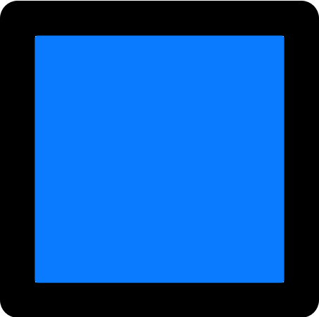
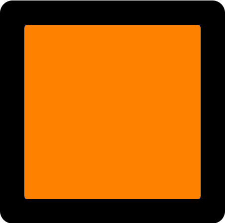

Tutorial 3: Editing and Re-using Blocks
Task:
- Move the yellow box
 from the left side of Station A to the right side and turn it upside-down.
from the left side of Station A to the right side and turn it upside-down. - Move the blue box  from the left side of Station B to the right side and turn it upside-down.
- Move the orange box  from the left side of Station C to the right side, on top of the green box, and turn it upside-down.
As you have seen in the previous tutorial, robot programs are often very similar to each other. It can therefore be useful to use existing code rather than writing all programs from scratch.
The goal of this tutorial is similar to the previous one, and you could solve it like you did before, but we will use a different method to program this time. You can click on each step to get more detailed instructions.
- Create a recipe for the code from the first task
- Open the menu below and drag the block from there onto the canvas. It will not attach to the existing blocks, so you can drag it anywhere where there is space.
- Move the pick-up and place commands into the new recipe you created. To do so, start dragging the block from the existing program and the other block attached to it will automatically move with it. Drag them into the center of the new block you just added and attach them to it.
- Rename the block by clicking on the "do something" text. You should give it a name that describes what the code inside does, like "Move box to right" in this case.
- Open the menu again. There should be a new
 block (or a similar block with the same name that you gave the recipe block). Drag this new block onto the canvas and attach it to the bottom of the block.
block (or a similar block with the same name that you gave the recipe block). Drag this new block onto the canvas and attach it to the bottom of the block. - Before you continue, take a moment to understand what the current program does. Click the
 button underneath the simulator to try it out. As you can see, the program executes the exact same commands as before: It picks up the box from the left side of station A and moves it to the right side.
button underneath the simulator to try it out. As you can see, the program executes the exact same commands as before: It picks up the box from the left side of station A and moves it to the right side.
- Re-use the recipe for station B
- Open the
 menu and drag a second
menu and drag a second  block onto the canvas. Attach it to the bottom of the current program, after the block.
block onto the canvas. Attach it to the bottom of the current program, after the block. - Set the correct station as target for the new block by clicking on
 and selecting "Station B".
and selecting "Station B". - Open the menu and drag a second block onto the canvas. Attach it to the bottom of the current program, underneath the block you added one step earlier.
- Before you continue, take a moment to understand what the current program does. Reset the simulator and then click the button again to try it out. As you can see, the program now executes the same commands as before, but for both station A and B.
- Open the
- Turn the box upside-down at both stations
- Open the
 menu and drag the block onto the canvas. Place it inside the recipe. The robot can only turn blocks that it is currently holding, so the new block has to be placed right after the
menu and drag the block onto the canvas. Place it inside the recipe. The robot can only turn blocks that it is currently holding, so the new block has to be placed right after the  block.
block. - Drag another block from the menu onto the canvas and place it right after the one you just added.
- Before you continue, take another moment to understand what the current program does and try it out by resetting the simulator and clicking the button. As you can see, the program still executes the exact same commands first at station A and then at station B. This is because both stations use the same recipe, and all changes you make to the recipe are applied to the programs for both stations at once.
- Open the
- Save time by copying the recipe
- Since the third part of the task is also similar to the previous ones, you can use the existing recipe as a starting point instead of creating a new one from scratch. Right-click the block and click on "Copy definition of 'Move box to right'" (or the equivalent with the recipe name you picked).
- You have just created a copy of the current recipe with exactly the same blocks inside. You might have to drag the new recipe a bit to the side so it doesn't overlap with the other one. This recipe can be the starting point for programming station C.
- Change the locations in the copied recipe
- Open the
 menu and select
menu and select  . Select the middle left location and drag the new block onto the canvas.
. Select the middle left location and drag the new block onto the canvas. - Attach the "middle left" location you just created to the block of the copied recipe, replacing the "bottom left" block. You can delete the leftover "bottom left" block by dragging it onto the trash can symbol if you want.
- Repeat the previous steps and define another new location at the middle right. Attach it to the
 block of the copied recipe, replacing the "bottom right" block. Again, you can delete the leftover block if you want.
block of the copied recipe, replacing the "bottom right" block. Again, you can delete the leftover block if you want. - Now that you have changed the copied recipe's content, you should also change its name so it fits the new content better. In this example, you could rename it to "Move stacked box to right".
- Open the
- Use the new recipe in your program
- All that is left to do is to use the new recipe in your program. Open the menu and drag another block onto the canvas. Attach it to the bottom of the current program, after the last block.
- Set the correct station as target for the new block by clicking on and selecting "Station C".
- Open the menu and drag the block with the name you gave to the copied recipe onto the canvas. Attach it to the bottom of the current program, underneath the block you added one step earlier.
- All that is left to do is to use the new recipe in your program. Open the
- Test the program
- You have successfully programmed the entire task. Test your solution by clicking the button below. Watch how the robot executes each step of the program. Notice how the programs for stations A and B still use the old recipe and were not affected by your changes.
Click here to continue with the first task.